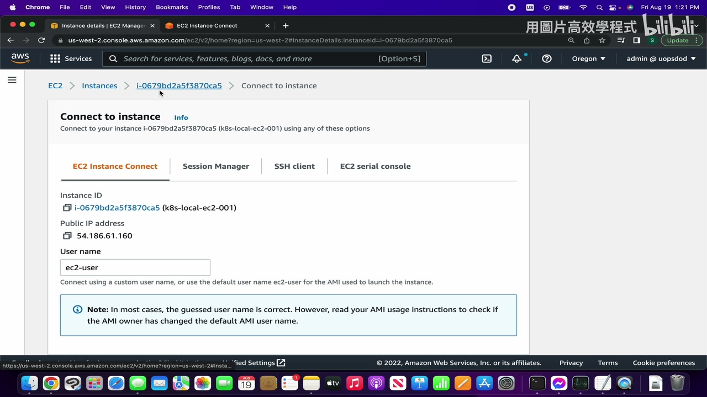

⚠️ 待主人拍板：本页只是原型，生产代码未改（NoteView 仍是现状的「居中限宽 640」）。 直接双击本文件即可在浏览器打开对比。
真实素材：笔记 6009「Docker 常用命令实战」的 EC2 控制台帧（1280×720）+ 该节原文。 阅读区按真实宽度（右栏约 760px）模拟。缩到窗口 720px 以下可看窄屏表现。
图片独占一行居中，上下文被图片切断——这是主人 11-19 说的「图片太大占满整行，应该留白/左右布局」的现状。
本笔记整理自「用圖片高效學程式」的 Docker 入门视频，围绕常用命令做一次完整演示。实验环境是 AWS EC2 上的实例，通过 EC2 Instance Connect 在浏览器里打开终端操作。示例实例 ID 为 i-0679bd2a5f3870ca5（k8s-local-ec2-001），公网 IP 为 54.186.61.160，私有 IP 为 172.31.11.141，登录用户为 ec2-user，区域为 us-west-2（Oregon）。图1展示了控制台 Connect to instance 页面中的连接信息。

课程目标是快速上手 Docker 常用命令，重心放在后续 Kubernetes 学习，不深入 Docker 底层实现。下面先给出命令总览，再按实际操作顺序展开。
做法：图片 float 到右侧占 44% 宽，后面的文字自然绕到左边继续读，图下方文字自动回到全宽。
优点：CSS 改动 ≈12 行，不碰渲染层与数据结构；文字与图并置，阅读流不断。
代价：文字绕着不规则形状走，长段落读起来略跳；段落很长时会「骑」在图上很多行。
本笔记整理自「用圖片高效學程式」的 Docker 入门视频，围绕常用命令做一次完整演示。实验环境是 AWS EC2 上的实例，通过 EC2 Instance Connect 在浏览器里打开终端操作。示例实例 ID 为 i-0679bd2a5f3870ca5（k8s-local-ec2-001），公网 IP 为 54.186.61.160，私有 IP 为 172.31.11.141，登录用户为 ec2-user，区域为 us-west-2（Oregon）。图1展示了控制台 Connect to instance 页面中的连接信息。
课程目标是快速上手 Docker 常用命令，重心放在后续 Kubernetes 学习，不深入 Docker 底层实现。下面先给出命令总览，再按实际操作顺序展开。
做法：图片与它紧接着的一段文字左右分栏（左图右文），这一对结束后恢复全宽。
优点：文字仍是完整矩形，不绕行；图与解释严格对齐，适合「这张图在解释这段」。
代价：要在渲染层把「图 + 下一段」配对成一组（section.ts 改动中等）；配错段就会图文错位；窄屏必须回落单栏。
实验环境是 AWS EC2 上的实例，通过 EC2 Instance Connect 在浏览器里打开终端操作。示例实例 ID 为 i-0679bd2a5f3870ca5（k8s-local-ec2-001），公网 IP 为 54.186.61.160。
登录用户为 ec2-user，区域为 us-west-2（Oregon）。
课程目标是快速上手 Docker 常用命令，重心放在后续 Kubernetes 学习，不深入 Docker 底层实现。下面先给出命令总览，再按实际操作顺序展开。
做法：按图片原始宽高比分两档——宽图/表格截图（≥ 16:9 或面积大）走现居中限宽；竖图/窄图（≤ 4:3）float 到左侧小尺寸，文字环绕。
优点：视频帧（16:9 全画面）本就该大；课件竖版/手机截图才适合小图绕排——不用改渲染层，纯 CSS + 一个 class。
代价：需要前端在图片 onload 后判定比例并加 class（十几行 JS）；两种形态并存，视觉上不完全统一。
本笔记整理自「用圖片高效學程式」的 Docker 入门视频，围绕常用命令做一次完整演示。实验环境是 AWS EC2 上的实例，通过 EC2 Instance Connect 在浏览器里打开终端操作。
课程目标是快速上手 Docker 常用命令，重心放在后续 Kubernetes 学习，不深入 Docker 底层实现。下面先给出命令总览，再按实际操作顺序展开。
（示意）当图片是竖版课件或手机截图时，它会被缩到左侧 38% 宽，右侧文字继续往下读——既不浪费整行，也不把文字挤成一条缝。这段文字就是在演示环绕效果，可以看右侧有没有被挤得过窄。